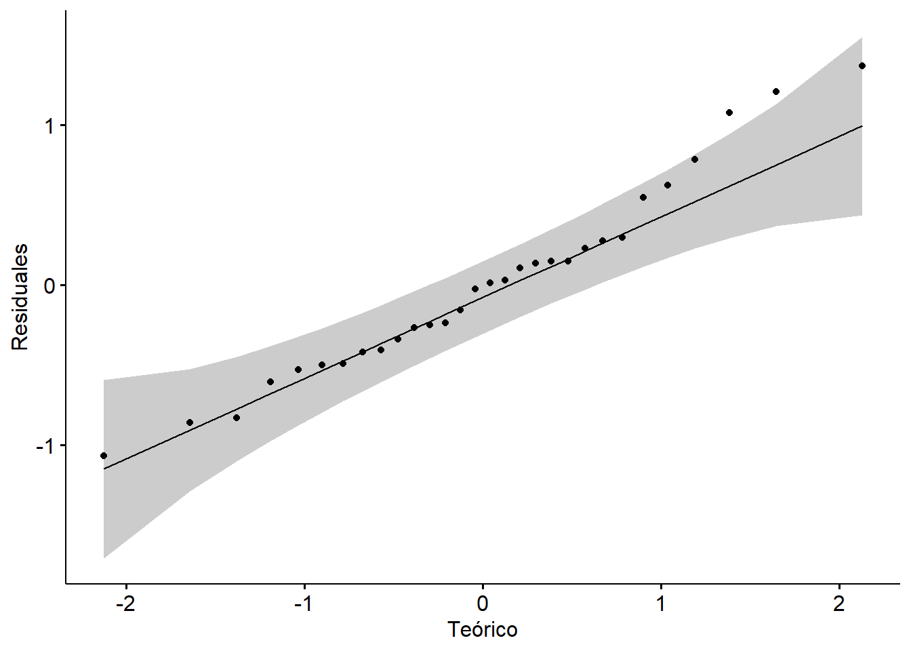
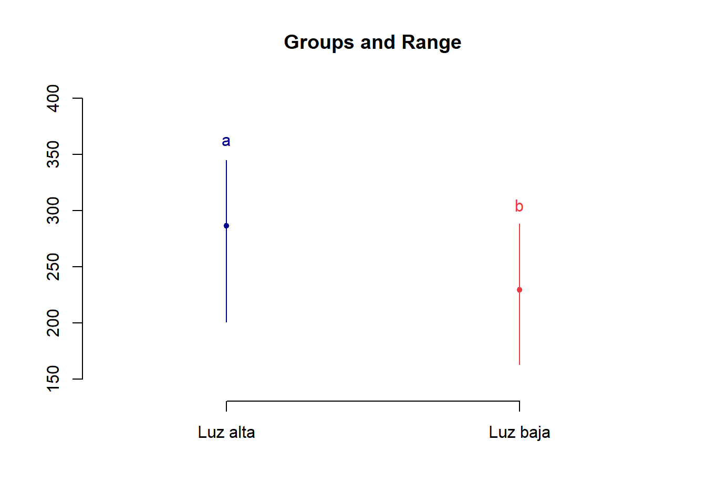
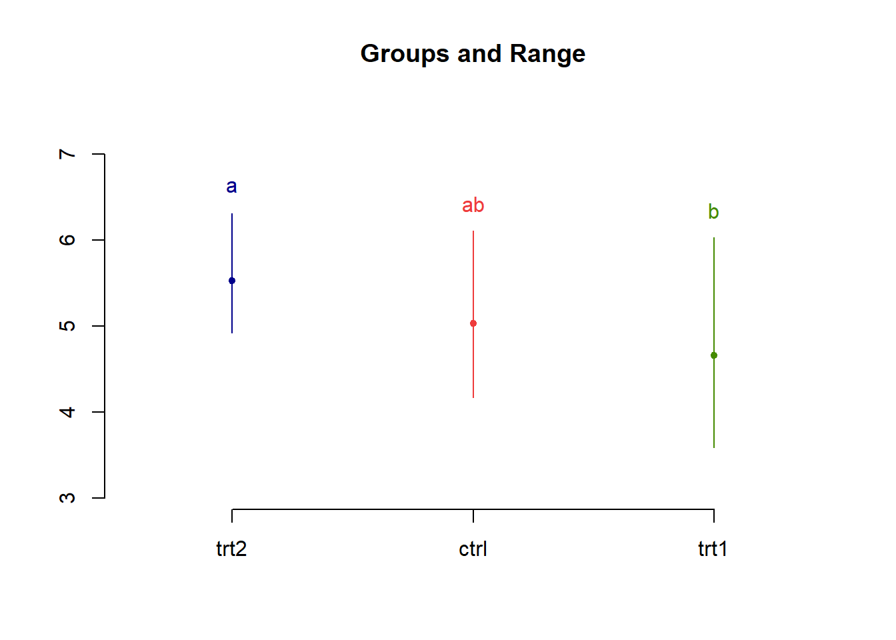
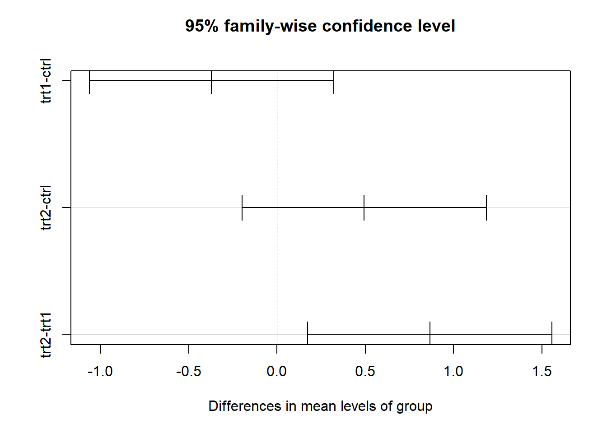

Lección 7 Modelado de relaciones
En esta lección vamos a considerar la comparación de más de dos muestras y los diversos métodos que podemos emplear para esto.
7.1 Análisis de Varianza (ANOVA)
El análisis clásico para realizar observaciones de múltiples muestras es el análisis de varianza o ANOVA. Para llevar a cabo este análisis existen ciertos supuestos que nuestros datos deben de cumplir.
- Distribución normal de los datos.
- Homocedasticidad (varianzas iguales).
- Datos independientes.
La distribución normal y la homocedasticidad son hasta cierto punto flexibles. Sin embargo, el ANOVA es sumamente sensitivo a muestras no independientes. Pese a su nombre, el análisis de varianza en realidad busca diferencias en las medias (\(\mu\)) de las muestras.
Empezaremos con el ANOVA de una vía, es decir, un ANOVA en el cuál una sola variable define los grupos o tratamientos. El ANOVA de \(k\) muestras o grupos inicia con el cálculo de las cantidades que describen la variabilidad de los datos entre los grupos y dentro de los grupos. Antes de empezar con esto, veamos un poco de notación utilizada en un ANOVA.
\(x_{ij}\): observación \(j\) en el \(i\)-ésimo grupo. Por ejemplo la primer observación del primer grupo o muestra sería \(x_{11}\), la segunda \(x_{12}\) y así sucesivamente.
\(k\): Número total de grupos, muestras o tratamientos.
\(n_i\): número de observaciones en el \(i\)-ésimo grupo.
\(\overline{x}_i\): la media del \(i\)-ésimo grupo.
\(s_i\): la desviación estándar del \(i\)-ésimo grupo.
\(n\): el número total de observaciones, dado por la fórmula:
\[\begin{equation} n = \sum_{i = 1}^k n_i \end{equation}\]
- \(\overline{x}\): la gran media o promedio de todas las observaciones, dado por la fórmula:
\[\begin{equation} \overline{x} = \frac{\sum_{i = 1}^k \sum_{j = 1}^{n_i}n_{ij}}{n} = \frac{\sum_{i = 1}^k n_{i} \overline{x}_i}{\sum_{i}^k n_i} = \frac{\sum_{i = 1}^k n_{i} \overline{x}_i}{n} \end{equation}\]
7.1.1 Variación dentro de los grupos
Una medida de variación dentro de los grupos es la varianza agrupada, denotada como \(s_{p}^2\). Su cálculo se obtiene de la siguiente manera:
\[\begin{equation} s_{p}^2 = \frac{\sum_{i=1}^k (n_i - 1)s_i^2}{\sum_{i=1}^k(n_i - 1)} = \frac{\sum_{i=1}^k (n_i - 1)s_i^2}{n - k} \tag{7.1} \end{equation}\]
Mientras que para obtener la desviación estándar agrupadas simplemente obtenemos la raíz cuadrada.
\[\begin{equation} s_{p} = \sqrt{\frac{\sum_{i=1}^k (n_i - 1)s_i^2}{\sum_{i=1}^k(n_i - 1)}} = \sqrt{\frac{\sum_{i=1}^k (n_i - 1)s_i^2}{n - k}} \tag{7.2} \end{equation}\]
El valor de la desviación estándar agrupada solamente depende de la variabilidad dentro de los datos y no de sus medias. Por ahora, vamos a asignar términos correspondientes al ANOVA a nuestra fórmula.
El numerador de la varianza agrupada se conoce como suma de cuadrados dentro de los grupos, \(SS(dentro)\) mientras que el denominador son los grados de libertad dentro de los grupos, \(df(dentro)\).
Así, entonces:
\[\begin{equation} SS(dentro) = \sum_{i = 1}^k (n_i - 1)^2 \tag{7.3} \end{equation}\]
\[\begin{equation} df(dentro) = n - k \tag{7.4} \end{equation}\]
La razón entre estos dos valores se conoce como cuadrados medios dentro de los grupos, \(MS(dentro)\).
\[\begin{equation} MS(dentro) = \frac{SS(dentro)}{df(dentro)} \tag{7.5} \end{equation}\]
Por lo tanto \(MS(dentro)\) mide la variabilidad dentro de los grupos.
7.1.2 Variación entre los grupos
En los casos en los que solamente tenemos dos grupos, la diferencia es simplemente \((\overline{x}_1 - \overline{x}_2)\). Sin embargo, en este caso tenemos más dos grupos que queremos comparar. Para este caso utilizamos los cuadrados medios entre los grupos, \(MS(entre)\). Su cálculo se obtiene de la siguiente manera:
\[\begin{equation} MS(entre) = \frac{\sum_{i=1}^k n_i(\overline{x}_i - \overline{x})^2}{k - 1} \tag{7.6} \end{equation}\]
De igual manera, el numerador y denominador tienen sus nombres respectivos. Al numerador se le conoce coo suma de cuadrados entre los grupos, \(SS(entre)\) y al denominador como grados de libertad entre los grupos, \(df(entre)\).
\[\begin{equation} SS(entre) = \sum_{i=1}^k n_i(\overline{x}_i - \overline{x})^2 \tag{7.7} \end{equation}\]
\[\begin{equation} df(dentro) = k - 1 \tag{7.8} \end{equation}\]
7.1.3 Una relación importante en el ANOVA
El nombre análisis de varianza viene de la comparación entre \(SS(entre)\) y \(SS(dentro)\). Consideremos un valor, \(x_{ij}\).
\[\begin{equation} x_{ij} - \overline{x} = (x_{ij} - \overline{x}_i) + (x_{ij} - \overline{x}) \end{equation}\]
Esta ecuación expresa la desviación que hay en una observación \((x_{ij})\) de la gran media \((\overline{x})\) como la suma de dos partes: una desviación dentro del grupo \((x_{ij} - \overline{x}_i)\) y una desviación entre grupos \((\overline{x}_i - \overline{x})\).
Esta relación se mantiene para la suma de cuadrados correspondiente:
\[\begin{equation} \sum_{i=1}^k\sum_{j=1}^{n_i}(x_{ij} - \overline{x})^2 = \sum_{i=1}^k \sum_{j=1}^{n_i}(x_{ij} - \overline{x}_i)^2 + \sum_{i=1}^k\sum_{j=1}^{n_i}(x_{ij} - \overline{x})^2 \tag{7.9} \end{equation}\]
Que, al reescribirse se puede expresar como:
\[\begin{equation} \sum_{i=1}^k\sum_{j=1}^{n_i}(x_{ij} - \overline{x})^2 = \sum_{i=1}^k (n_i - 1)s_{i}^2 + \sum_{i=1}^k n_i (\overline{x}_i - \overline{x})^2 \tag{7.10} \end{equation}\]
Esta cantidad se conoce como suma de cuadrados totales, \(SS(total)\).
\[\begin{equation} SS(total) = \sum_{i=1}^k\sum_{j=1}^{n_i}(x_{ij} - \overline{x})^2 \tag{7.11} \end{equation}\]
Este valor mide la cantidad de variabilidad entre todas las \(n\) observaciones en los grupos \(k\).
\[\begin{equation} SS(total) = SS(entre) + SS(dentro) \tag{7.12} \end{equation}\]
Esta relación anterior muestra cómo la variación total de nuestros datos puede dividirse o partirse en dos componentes: la variación entre grupos y la variación dentro de los grupos (de ahí el nombre, análisis de varianza).
Para los grados de libertad totales \(df(total)\) se utiliza la siguiente fórmula:
\[\begin{equation} df(total) = n - 1 \tag{7.13} \end{equation}\]
Y al igual que la suma de cuadrados, se pueden calcular sumando los grados de libertad entre y dentro de los grupos:
\[\begin{equation} df(total) = df(dentro) + df(entre) \\ df(total) = (n - k) + (k - 1) \tag{7.14} \end{equation}\]
7.1.4 Tabla de ANOVA
Cuando se realiza un ANOVA, es una práctica muy común realizar una tabla de ANOVA. En estas tablas vamos anotando los resultados de nuestras sumas de cuadrados, nuestros grados de libertad y nuestros cuadrados medios, de la siguiente manera.
| Valores | df | SS | MS |
|---|---|---|---|
| Entre los grupos (Tratamientos) | \(k - 1\) | \(\sum_{i = 1}^{k}n_{i}(\overline{x}_{i} - \overline{x})^2\) | \(\frac{SS(entre)}{df(entre)}\) |
| Dentro de los grupos (Residuales) | \(n - k\) | \(\sum_{i = 1}^{k}\sum_{j = 1}^{n_i}(x_{ij} - \overline{x}_{i})^2\) | \(\frac{SS(dentro)}{df(dentro)}\) |
| Total | \(n - 1\) | \(\sum_{i = 1}^{k}\sum_{j = 1}^{n_i}(x_{ij}-\overline{x})^2\) |
Una tabla de ANOVA nos ayuda a organizar los datos y los valores de nuestro conjunto de datos. En la tabla 7.1 podemos ver las fórmulas que necesitamos utilizar para obtener los valores correspondientes. Por ejemplo, para obtener los grados de libertad entre tratamientos,\(df(entre)\), utilizaría la fórmula \(k - 1\) y así sucesivamente. La suma de cuadrados y los cuadrados medios entre grupos son los que corresponden a los tratamientos y los que se dan dentro de los grupos son típicamente conocidos como residuales.
7.1.5 Modelo del ANOVA
Pensamos acerca de \(x_{ij}\) como una observación aleatoria del grupo \(i\), donde la media poblacional del grupo \(i\) es \(\mu_i\). Utilizamos el ANOVA para investigar la hipótesis nula, \(H_0: \mu_1 = \mu_2 = \cdots = \mu_i\). El siguiente modelo describe al ANOVA:
\[\begin{equation} x_{ij} = \mu + \tau_i + \epsilon_{ij} \tag{7.15} \end{equation}\]
En este modelo, \(\mu\) representa la gran media poblacional, es decir la media de todos los grupos combinados. Si la \(H_0\) entonces \(\mu\) es la media en común para todos los grupos. Si es falsa, entonces al menos una de las \(\mu_i\) difiere de la gran media poblacional \(\mu\). El término \(\tau_i\) (tau) representa el efecto que tiene el grupo \(i\), es decir, la diferencia entre la media poblacional para el grupo \(i\), \(\mu_i\) y la gran media poblacional, \(\mu\). Por ende:
\[\begin{equation} \tau_i = \mu_i - \mu \tag{7.16} \end{equation}\]
Esto es equivalente a decir que \(H_0: \tau_1 = \tau_2 = \cdots = \tau_n = 0\). Si la \(H_0\) es falsa, entonces al menos alguno de los grupos o tratamientos difiere de los demás. Si \(\tau_i\) es positivo, entonces, las observaciones del grupo \(i\) tienden a ser mayores que el promedio, en cambio, si es negativo, las observaciones tienden a ser menores que el promedio.
El término \(\epsilon_{ij}\) (epsilon) representa el error aleatorio asociado con la observación \(j\) en el grupo \(i\). Por lo que nuestro modelo puede ser interpretado como:
\[\begin{equation} observación = gran \space media + efecto \space de \space grupo + error \space aleatorio \tag{7.17} \end{equation}\]
Estimamos la media general, \(\mu\), con la gran media de los datos \(\overline{x}\):
\[\begin{equation} \hat{\mu} = \overline{x} \end{equation}\]
De igual manera, estimamos la media poblacional del grupo \(i\) con la media muestral del grupo \(i\):
\[\begin{equation} \hat{\mu}_i = \overline{x}_i \end{equation}\]
Entonces, efecto de grupo es:
\[\begin{equation} \hat{\tau}_i = \overline{x}_i - \overline{x} \end{equation}\]
Finalmente, para el error aleatorio de la observación \(j\) en el grupo \(i\):
\[\begin{equation} \hat{\epsilon}_{ij} = x_{ij} - \overline{x}_i \end{equation}\]
Poniendo todos estos valores juntos obtenemos:
\[\begin{equation} x_{ij} = \overline{x} + (\overline{x}_i - \overline{x}) + (x_{ij} + \overline{x}_i) = \hat{\mu} + \hat{\tau_i} + \hat{\epsilon}_{ij} \end{equation}\]
En algunos libros e incluso algunos software, se utiliza la terminología \(SS(error)\) en lugar de \(SS(dentro)\) ya que este componente, \(x_{ij} - \overline{x}_i\), es la parte del error aleatorio en el modelo del ANOVA. También se le conoce como residuales y de está manera la encontramos en R.
Cuando hacemos un análisis de varianza, ANOVA, comparamos el tamaño del efecto de grupo de la muestra, \(\hat{\tau}_i\), al tamaño del error aleatorio de los datos, \(\hat{\epsilon}_{ij}\).
Esto se puede observar en las fórmulas para \(SS(entre)\) y \(SS(dentro)\).
\[\begin{equation} SS(entre) = \sum_{i=1}^k n_i \hat{\tau}_i^2 \end{equation}\]
\[\begin{equation} SS(dentro) = \sum_{i=1}^k \sum_{j=1}^{n_i} \hat{\epsilon}_{ij}^2 \end{equation}\]
7.1.6 Distribución de \(F\)
Consideremos la hipótesis nula \(H_0: \mu_1 = \mu_2 = \cdots = \mu_i\) y una hipótesis alternativa no direccional, \(H_A: Al \space menos \space una \space \mu_i \space no \space es \space igual\). El rechazo de la \(H_0\) no nos dice cuál grupo es el que es diferente.
La distribución de \(F\) fue nombrada así en honor del estadista y genetista R.A. Fisher y es utilizada en muchísimos análisis estadísticos. Su forma depende de dos parámetros: el numerador de los grados de libertad (\(df(entre)\)) y el denominador de los grados de libertad (\(df(dentro)\)). La siguiente figura muestra una distribución de \(F\) con \(df(entre) = 4\) y \(df(dentro) = 20\).
Figura 7.1: Distribución de \(F\) con \(df(entre) = 4\) y \(df(dentro) = 20\).
Como con el resto de distribuciones, tenemos una serie de comandos en R para trabajar con la distribución de \(F\).
-df() nos da un valor de densidad en determinado punto de la distribución de \(F\).
-pf() nos da un valor de densidad acumulado hasta cierto punto en la distribución de \(F\) (área debajo de la curva).
-qf() toma el valor de densidad que le ponemos como primer argumento y nos da como regreso un número cuya densidad acumulada empate con el valor de densidad ingresado.
-rf() genera cierta cantidad de número aleatorios de acuerdo al valor de densidad.
Para encontrar los valores críticos de nuestra distribución de \(F\) simplemente utilizamos la función qf().
qf(0.05, df1 = 4, df = 20, lower.tail = F) ## [1] 2.866081Y listo, nuestro valor crítico de \(F\) para un \(F(4, 20)_{0.05}\) es 2.87. Estos comandos se utilizan como el resto que hemos visto con las demás distribuciones.
7.1.7 Prueba de \(F\)
Para obtener nuestro estadístico de \(F\) utilizamos la siguiente fórmula:
\[\begin{equation} F_s = \frac{MS(entre)}{MS(dentro)} \tag{7.18} \end{equation}\]
Esta claro que el valor de nuestra \(F_s\) será mayor si las discrepancias entre las medias de los grupos (\(\overline{X}_i\)) son grandes en relación a variabilidad dentro de los grupos. Valores grandes de \(F_s\) tienden a proveer evidencia en contra de la \(H_0\).
Veamos todo lo que hemos visto con un ejemplo.
Ejemplo: Se realizó un experimento sobre la alimentación de corderos con tres dietas distintas. Las ganancias de peso se muestran en la tabla @tab:ex1.
| Dieta 1 | Dieta 2 | Dieta 3 |
|---|---|---|
| 8 | 9 | 15 |
| 16 | 16 | 10 |
| 9 | 21 | 17 |
| 11 | 6 | |
| 18 |
En lugar de realizar todo el proceso manual (el cuál puede tomar cierto tiempo) vamos a utilizar la función aov() para analizar estos datos y ver si realmente existe alguna diferencia entre los datos. Para esto necesitamos generar nuestra variable con nuestros datos.
Tratamiento <- c((rep("Dieta 1", 3)), c(rep("Dieta 2", 5)), c(rep("Dieta 3", 4)))
Peso <- c(8, 16, 9, 9, 16, 21, 11, 18, 15, 10, 17, 6)
Corderos <- data.frame(Tratamiento, Peso)
Corderos## Tratamiento Peso
## 1 Dieta 1 8
## 2 Dieta 1 16
## 3 Dieta 1 9
## 4 Dieta 2 9
## 5 Dieta 2 16
## 6 Dieta 2 21
## 7 Dieta 2 11
## 8 Dieta 2 18
## 9 Dieta 3 15
## 10 Dieta 3 10
## 11 Dieta 3 17
## 12 Dieta 3 6Ahora que tenemos nuestra variable simplemente ingresamos el siguiente comando.
ANOVA <- aov(Peso ~ Tratamiento, Corderos)Si queremos observar nuestros valores-p calculados, y ver si existen diferencias significativas, tenemos que guardar el análisis en una variable, en este caso yo la nombre ANOVA. Posteriormente utilizamos la función summary().
summary(ANOVA)## Df Sum Sq Mean Sq F value Pr(>F)
## Tratamiento 2 36 18.00 0.771 0.491
## Residuals 9 210 23.33Donde obtenemos una tabla de ANOVA con nuestros valores F esperados y F estimados. El apartado Pr(>F) es nuestro valor-p. Si quisiéramos guardar nuestra tabla de ANOVA para algún reporte, podemos hacerlo a través de la librería broom.
library(broom)
ANOVA.tabla <- tidy(ANOVA)| Término | df | SS | MS | Estadístico de F | Valor p |
|---|---|---|---|---|---|
| Tratamiento | 2 | 36 | 18.00000 | 0.7714286 | 0.490658 |
| Residuals | 9 | 210 | 23.33333 |
Por lo tanto nuestro estadístico \(F\) calculado nos da un valor de 0.77, el área correspondiente a esta densidad valor \(F\) es 0.4907, por lo que nuestro valor-p > 0.05 y aceptamos la \(H_0\).
7.2 Diseño por bloques aleatorizados
En un diseño por bloques aleatorizados, primero agrupamos las unidades experimentales en bloques de unidades relativamente similares y después alocamos tratamientos de manera aleatoria dentro de cada bloque. Para llevar a cabo este tipo de diseños, el investigador debe de crear o identificar bloques adecuados de unidades experimentales y posteriormente asignar tratamientos de manera aleatoria dentro de cada bloque de tal manera que cada tratamiento aparece en el bloque (al menos para un diseño de bloques completo).
¿Por qué crear bloques? Bueno este procedimiento ayuda a reducir o eliminar variabilidad causada por variables extrañas, por lo tanto, aumenta la precisión de los experimentos. Podemos observar el diseño experimental de manera tabular, de la siguiente manera.
| T1 | T2 | T3 | |
|---|---|---|---|
| Bloque 1 | X1,1 | X1,2 | X1,3 |
| Bloque 2 | X2,1 | X2,2 | X2,3 |
| Bloque 3 | X3,1 | X3,2 | X3,3 |
| . | . | . | . |
| . | . | . | . |
| . | . | . | . |
| Bloque 10 | X10,1 | X10,2 | X10,3 |
Donde \(X_{i,j}\) representa la observación \(i\) que recibió el tratamiento \(j\).
7.2.1 Creando los bloques
La creación de los bloques es una forma de organizar la variación inherente que existe entre las unidades experimentales. De manera ideal, los bloques incrementan la información disponible del experimento. Para esto se deben crear bloques lo más homogéneos posibles entre sí para que la variación inherente entre las unidades experimentales sea, dentro de lo posible, variación entre bloques más que dentro de los bloques.
Una vez que los bloques se han generado, lo que ocurre dentro de cada bloque es como un “mini-experimento.” La aleatorización se hace para cada bloque de manera separada. Para el análisis de los bloques utilizamos un ANOVA por bloques aleatorizados. Consideremos el siguiente ejemplo:
Ejemplo: Un agrónomo se encuentra comparando variedades de cebada, por lo que genera distintas parcelas de cada variedad para así medir su eficiencia. Sin embargo, el arreglo espacial de las parcelas es muy importante, ya que pueden surgir diferencias por el tipo de suelo, pH, etc., por lo que el área de cultivo fue dividida en varias regiones (los bloques) y después, cada bloque fue subdividido en distintas parcelas. Dentro de cada bloque las variades de granos son sembradas de manera aleatoria, con una aleatorización echa para cada bloque. Se obtienen los siguientes resultados.
| Bloque 1 | Bloque 2 | Bloque 3 | Bloque 4 | Media de la variedad | |
|---|---|---|---|---|---|
| Variedad 1 | 93.5 | 66.6 | 50.5 | 42.4 | 63.3 |
| Variedad 2 | 102.9 | 53.2 | 47.4 | 43.8 | 61.8 |
| Variedad 3 | 67.0 | 54.7 | 50.0 | 40.1 | 53.0 |
| Variedad 4 | 86.3 | 61.3 | 50.7 | 46.4 | 61.2 |
| Media del bloque | 87.4 | 59.0 | 49.7 | 43.2 |
Como podemos ver en los datos, existe claramente un gradiente de mayor fertilidad, partiendo del bloque 1 al bloque 4. Gracias al diseño por bloques aún podemos realizar la comparación entre las variedades.
La hipótesis nula de nuestro ANOVA es que las medias de nuestras poblaciones son iguales, \(H_0: \mu_1 = \mu_2 = \cdots = \mu_k\). Por lo que nuestra hipótesis nula sería que todas las variedades son iguales.
El modelo de ANOVA por bloques aleatorizados sufre ciertas alteraciones al modelo de una vía.
\[\begin{equation} x_{ijk} = \mu + \tau_i + \beta_{j} + \epsilon_{ijk} \tag{7.19} \end{equation}\]
Donde \(x_{ijk}\) representa la \(k\)-ésima observación, cuando el tratamiento \(i\) es aplicado al bloque \(j\). \(\mu\) representa la gran media poblacional, y \(\tau_i\) el efecto del grupo \(i\). El nuevo término, \(\beta_{j}\) representa el efecto de \(j\)-ésimo bloque. Podemos repensar este modelo de la siguiente manera:
\[\begin{equation} (x_{ijk} - \tau_i) = \mu + \beta_{j} + \epsilon_{ijk} \end{equation}\]
Bueno, ahora la parte izquierda de esta ecuación toma describe los datos una vez que los efectos del tratamiento, \(\tau_i\) son removidos, ¿cómo estimamos este lado izquierdo con nuestros datos? Bastante sencillo.
\[\begin{equation} x_{ijk} - \hat{\tau_i} = x_{ijk} - (\overline{x}_i - \overline{x}) \end{equation}\]
Dentro de cada tratamiento, la media del tratamiento es extraída de cada valor. Si viésemos las desviaciones de la media de los tratamientos de nuestros datos, veríamos que existe todavía bastante variabilidad atribuible a los bloques.
Para este caso, escribiremos la \(SS(entre)\) como \(SS(tratmientos)\) para distinguir nuestra suma de cuadrados de los tratamientos de la de los bloques. Para este caso vamos a partir nuestra \(SS(dentro)\) en dos partes: \(SS(bloques)\), que mide la variabilidad entre la media de los bloques y \(SS(dentro)\), que mide el resto de variabilidad no explicada de los datos.
Así, tenemos la siguiente fórmula:
\[\begin{equation} SS(total) = SS(tratamientos) + SS(bloques) + SS(dentro) \end{equation}\]
¿Cómo calculamos \(SS(bloques)\)? Con la siguiente fórmula:
\[\begin{equation} SS(bloques) = {\sum_{j=1}^J m_j (\overline{x}_{bloque} - \overline{x})^2} \tag{7.20} \end{equation}\]
Donde \(\overline{x}_{bloque}\) es la media de las observaciones del bloque \(j\), \(J\) es el número total de bloques y \(m_j\) es el número de observaciones en el bloque \(j\). Los grados de libertad serían:
\[\begin{equation} df(bloques) = J - 1 \tag{7.21} \end{equation}\]
Y de manera análoga al ANOVA de una vía, \(SS(bloques)\) es el numerador y \(df(bloques)\) es el denominador para el calculo de los cuadrados medios de los bloques, \(MS(bloques)\).
\[\begin{equation} MS(bloques) = \frac{\sum_{j=1}^J m_j (\overline{x}_{bloque} - \overline{x})^2}{J - 1} \tag{7.22} \end{equation}\]
Para el calculo de \(SS(dentro)\) realizamos la siguiente operación, ya que el calculo de \(SS(bloques)\) reduce la variabilidad no explicada, \(SS(dentro)\).
\[\begin{equation} SS(dentro) = SS(total) - SS(tratamientos) - SS(bloques) \tag{7.23} \end{equation}\]
De igual manera, para calcular los grados de libertad utilizamos:
\[\begin{equation} df(dentro) = df(total) - df(tratamiento) - df(bloques) \tag{7.24} \end{equation}\]
Para el caso de nuestros datos, el valor de nuestra gran media poblacional, \(\overline{x}\) es:
\[\begin{equation} \overline{x} = \frac {93.5 + 102.9 + 67.0 + 86.3 + \cdots + 40.1 + 46.4}{16} = \frac{956.8}{16} = 59.8 \end{equation}\]
Ahora calculamos la suma de cuadrados de los tratamientos \(SS(tratamientos)\) como en el ANOVA de una sola vía.
\[\begin{equation} SS(tratamientos) = 4(63.3 - 59.8)^2 + 4(61.8 - 59.8)^2 + 4(53.0 - 59.8)^2 + 4(61.2 - 59.8)^2 = 259 \end{equation}\]
Ya que el número de tratamientos es 4, \(df(tratamientos)\):
\[\begin{equation} df(tratamientos) = 4-1 = 3 \end{equation}\]
Entonces:
\[\begin{equation} Ms(tratamientos) = \frac{259}{3} = 86.333 \end{equation}\]
Ahora calculamos \(SS(bloques)\):
\[\begin{equation} SS(bloques) = 4(87.4 - 59.8)^2 + 4(59.0 - 59.8)^2 + 4(49.7 - 59.8)^2 + 4(43.2-59.8)^2 = 4573 \end{equation}\]
Ya que tenemos cuatro bloques, \(J = 4\) y los \(df(bloques)\) son:
\[\begin{equation} df(bloques) = 4-1 = 3 \end{equation}\]
Ahora calculamos \(MS(bloques)\):
\[\begin{equation} MS(bloques) = \frac{4573}{3} = 1524.333 \end{equation}\]
Para el calculo de la \(SS(total)\) realizamos la extracción de la gran media poblacional a cada valor:
\[\begin{equation} SS(total) = (93.5-59.8)^2 + (102.9-59.8)^2 + (67.0-59.8)^2 + \cdots + (46.4-59.8)^2 = 5411 \end{equation}\]
Por lo tanto, \(SS(dentro)\) se obtiene restando las demás \(SS\) a \(SS(total)\).
\[\begin{equation} SS(dentro) = 5411 - 259 - 4573 = 579 \end{equation}\]
Y nuestros \(df(dentro)\) se calculan restando el resto de \(df\).
\[\begin{equation} df(dentro) = 15 - 3 - 3 = 9 \end{equation}\]
Por lo tanto, \(MS(dentro)\) se obtiene así:
\[\begin{equation} MS(dentro) = \frac{579}{9} = 64.333 \end{equation}\]
Ahora sí, podemos calcular nuestro estadístico de \(F\) con la fórmula (7.18).
\[\begin{equation} F_s = \frac{86.333}{64.333} = 1.342 \end{equation}\]
Vamos a ver qué resultado obtenemos con R, para realizar un ANOVA por bloques simplemente añadimos + Bloque después del tratamiento en el argumento de la función aov(). ¡Recuerden guardar el ANOVA en una variable!
Bloque <- factor(rep(1:4, each = 4))
Variedad <- factor(rep(c("Variedad 1", "Variedad 2", "Variedad 3", "Variedad 4"), 4))
Peso <- c(93.5, 102.9, 67.0, 86.3,
66.6, 53.2, 54.7, 61.3,
50.5, 47.4, 50, 50.7,
42.4, 43.8, 40.1, 46.4)
Cebada <- data.frame(Peso, Bloque, Variedad)
anova.bloque <- aov(Peso ~ Variedad + Bloque, Cebada)
summary(anova.bloque)## Df Sum Sq Mean Sq F value Pr(>F)
## Variedad 3 259 86.4 1.344 0.320294
## Bloque 3 4573 1524.4 23.712 0.000131 ***
## Residuals 9 579 64.3
## ---
## Signif. codes: 0 '***' 0.001 '**' 0.01 '*' 0.05 '.' 0.1 ' ' 1Como podemos ver, el valor-p obtenido es de 0.320294, por lo que aceptamos la \(H_0\) y decimos que las cuatro variedades tienen el mismo rendimiento. ¡Observemos la cantidad de variabilidad explicada por \(SS(bloques)\)!
library(broom)
ANOVA.tabla.bloque <- tidy(anova.bloque)| Término | df | SS | MS | Estadístico de F | Valor p |
|---|---|---|---|---|---|
| Variedad | 3 | 259.265 | 86.42167 | 1.344294 | 0.3202945 |
| Bloque | 3 | 4573.105 | 1524.36833 | 23.711635 | 0.0001314 |
| Residuals | 9 | 578.590 | 64.28778 |
7.3 ANOVA de dos vías
Algunos análisis de varianza requieren más de un factor o variable. En el ejemplo anterior, nuestro factor era el tipo de variedad de cebada y los niveles eran 4: variedad 1, 2, 3 y 4.
Ejemplo: Un fisiologo vegetal investiga al efecto del estrés mecánico en el crecimiento de plantas de soya. Las plantas fueron asignadas a uno de los cuatro tratamientos, con 13 plantulas por tratamiento. Las plantas de dos de los tratamientos fueron estresadas al agitarlas durante 20 minutos, dos veces al día, mientras que el grupo control no fue estresado. Aquí tenemos nuestro primer factor, con dos niveles: agitamiento y control. Además, las plantas crecieron en dos condiciones de luz: baja y moderada. Así que en este caso, nuestro segundo factor es la cantidad de luz, con dos niveles: baja y moderada. Nuestros tratamientos quedan de la siguiente manera:
Tratamiento 1: Control, luz baja
Tratamiento 2: Estrés, luz baja
Tratamiento 3: Control, luz moderada
Tratamiento 4: Estrés, luz moderada
Después de 16 días las plantas fueron colectadas y se midió el área total de la hoja (cm2) de cada planta. Los resultados fueron los siguientes:
| Control, luz baja | Estrés, luz baja | Control, luz moderada | Estrés, luz moderada |
|---|---|---|---|
| 264 | 235 | 314 | 283 |
| 200 | 188 | 320 | 312 |
| 225 | 195 | 310 | 291 |
| 268 | 205 | 340 | 259 |
| 215 | 212 | 299 | 216 |
| 241 | 214 | 268 | 201 |
| 232 | 182 | 345 | 267 |
| 256 | 215 | 271 | 326 |
| 229 | 272 | 285 | 241 |
| 288 | 163 | 309 | 291 |
| 253 | 230 | 337 | 269 |
| 288 | 255 | 282 | 282 |
| 230 | 202 | 273 | 257 |
Figura 7.2: Gráfica de puntos de los datos de crecimiento de plantas, la barra horizontal indica la media del tratamiento.
El modelo del ANOVA para este caso sería:
\[\begin{equation} x_{ijk} = \mu + \tau_i + \beta_j + \epsilon_{ijk} \tag{7.25} \end{equation}\]
Donde \(x_{ijk}\) es la \(k\)-ésima observación en el nivel \(i\) del primer factor y el nivel \(j\) del segundo factor. El término \(\tau_i\) representa el efecto del nivel \(i\) del primer factor (en este caso, la condición de estrés), y el término \(\beta_j\) representa el efecto del nivel \(j\) del segundo factor (condición de luz).
Si la influencia conjunta de dos factores es igual a la suma de sus influencias separadas, se dice que los dos factores son aditivos en cuanto a sus efectos. Visualizar esto es más sencillo con una tabla que incluya las medias de cada tratamiento.
| Luz baja | Luz moderada | Diferencia | |
| Control | 245.3 | 304.1 | 58.8 |
| Estrés | 212.9 | 268.8 | 55.9 |
| Diferencia | -32.4 | -35.3 |
Por ejemplo, el efecto del estrés reduce el área de la hoja por casi la misma cantidad, por lo que podríamos decir que el estrés tiene un efecto aditivo negativo sobre el área. Veamos esto en una gráfica.
Figura 7.3: Efecto del estrés sobre la media del área de las hojas.
Como podemos ver en la figura 7.3, el efecto de los tratamientos 2 y 4 (que corresponden a ambos tratamientos con estrés) parece reducir de manera casi idéntica el área de las hojas de nuestras plantas. Cuando los efectos de los factores son aditivos, decimos que no hay interacción entre los factores. Algunas veces, el efecto que un factor tiene sobre una variable depende del nivel del segundo factor. Cuando esto ocurre, decimos que los dos factores interactúan para generar el efecto de la variable de respuesta.
Ejemplo: Investigadores condujeron un estudio sobre el enriquecimiento de bebidas frutales a base de leche con cantidades bajas y altas de hierro (Fe) y zinc (Zn). Las bebidas fueron digeridas en un tracto gastrointestintal simulado y la retención celular de hierro fue medida (\(\mu\)g Fe/mg de proteína celular). La figura 7.4 muestra la interacción del promedio obtenido de los cuatro tratamientos. Cuando el nivel de Zn fue bajo, el efecto en la retención de Fe es mucho menor a cuando el nivel de Zn fue alto.
| Zn bajo | Zn alto | Diferencia | |
| Fe bajo | 0.707 | 0.215 | -0.492 |
| Fe alto | 0.994 | 1.412 | 0.418 |
| Diferencia | 0.287 | 1.197 |
En este ejemplo, las líneas de interacción no son paralelas, lo que quiere decir que existe una interacción entre el factor 1 (nivel de Fe) y el factor 2 (nivel de Zn). Quiere decir que el nivel de retención de Fe depende de la cantidad de Zn utilizada.
Figura 7.4: Interacción entre el nivel de suplemento de Zn y Fe.
Para estos casos podemos ajustar nuestro modelo del ANOVA para tomar en cuenta la interacción entre estos dos factores.
\[\begin{equation} x_{ijk} = \mu + \tau_i + \beta_j + \gamma_{ij} + \epsilon_{ijk} \tag{7.26} \end{equation}\]
Donde el nuevo término \(\gamma_{ij}\) es el efecto de la interacción entre el nivel \(i\) del primer factor y el nivel \(j\) del segundo factor. De igual manera, si hay \(n\) observaciones, entonces \(df(total) = n - 1\). Si hay \(I\) niveles para el primer factor, entonces \(I - 1\) nos da los grados de libertad y si hay \(J\) niveles para el segundo factor, de nuevo, \(J - 1\) nos da sus grados de libertad. Existen entonces \((I - 1) \times (J-1)\) grados de libertad para la interacción. Con \(I\) niveles en el primer factor y \(J\) niveles en el segundo, hay \(IJ\) combinaciones para los tratamientos, por lo tanto \(df(dentro) = n - IJ\).
Una hipótesis nula de interés podría ser que las interacciones suman 0:
\[\begin{equation} H_0: \gamma_{11} = \gamma_{12} = \cdots = \gamma_{IJ} = 0 \end{equation}\]
Para probar esta hipótesis calculamos el estadístico \(F_s\):
\[\begin{equation} F_s = \frac{MS(interacción)}{MS(dentro)} \end{equation}\]
Y rechazamos la \(H_0\) si nuestro valor-p es pequeño. Por ejemplo, para los datos de nuestras plantas, vamos a crear una matriz con los datos y realizar el ANOVA de dos vías.
Luz <- factor(c(rep("Luz baja", 26), rep("Luz alta", 26)))
Condicion <- factor(c(rep("Control", 13), rep("Estrés", 13), rep("Control", 13), rep("Estrés", 13)))
Area <- c(264, 200, 225, 268, 215, 241, 232, 256, 229, 288, 253, 288, 230,
235, 188, 195, 205, 212, 214, 182, 215, 272, 163, 230, 255, 202,
314, 320, 310, 340, 299, 268, 345, 271, 285, 309, 337, 282, 273,
283, 312, 291, 259, 216, 201, 267, 326, 241, 291, 269, 282, 257)
Soya <- data.frame(Luz, Condicion, Area)
plantas.anova <- aov(Area ~ Condicion + Luz, Soya)
summary(plantas.anova)## Df Sum Sq Mean Sq F value Pr(>F)
## Condicion 1 14858 14858 16.93 0.000148 ***
## Luz 1 42752 42752 48.71 7.14e-09 ***
## Residuals 49 43003 878
## ---
## Signif. codes: 0 '***' 0.001 '**' 0.01 '*' 0.05 '.' 0.1 ' ' 1Este ANOVA que acabamos de realizar no toma en cuenta el efecto de la interacción, ¿cómo podemos incluirlo? Bueno para esto tenemos que agregar un argumento especial en nuestro anova, que sería Condicion:Luz, le cual toma en cuenta la interacción entre la condición de estrés y la cantidad de luz.
plantas.anova.int <- aov(Area ~ Condicion + Luz + Condicion:Luz, Soya)
summary(plantas.anova.int)## Df Sum Sq Mean Sq F value Pr(>F)
## Condicion 1 14858 14858 16.595 0.000173 ***
## Luz 1 42752 42752 47.749 1.01e-08 ***
## Condicion:Luz 1 26 26 0.029 0.864570
## Residuals 48 42976 895
## ---
## Signif. codes: 0 '***' 0.001 '**' 0.01 '*' 0.05 '.' 0.1 ' ' 1Como podemos ver (y como ya sabíamos por la gráfica que realizamos), parece ser que la interacción entre el estrés y la condición de luz no es significativa, ya que obtenemos un valor-p muchísimo mayor a 0.05 (0.8646). Al parecer encontramos también diferencias significativas en nuestros dos factores (condición de estrés y cantidad de luz), de nuevo, algo que también ya habíamos observado en la figura 7.3.
Algo importante a considerar es que cuando existen interacciones entre los factores, como en la figura 7.4, la interpretación de los efectos de los factores no es la misma. Es difícil determinar el efecto independiente de un factor, por ejemplo, el efecto del Fe, ya que la naturaleza y la magnitud del efecto depende de un nivel particular de Zn. Debido a esto, primero buscamos la presencia de una interacción (a través de una gráfica o un ANOVA). Si encontramos una interacción entre los factores, usualmente detenemos el análisis en este punto. Si no hay una interacción (como en el caso de las plantas), procedemos a evaluar los efectos de los factores individuales.
Ya que en el caso de las plantas era muy evidente que no existe una interacción entre ambos factores (corroborado por el estadístico \(F\) para la interacción y la gráfica), pudimos concluir el ANOVA de dos vías y analizar el efecto de cada uno de los factores en donde, corroboramos que ambos parecen afectar el crecimiento de las plantas.
7.4 Combinaciones lineales de las medias
Algunas preguntas interesantes pueden ser abordadas considerando la combinación lineal de las medias de los grupos. Definida con el término \(L\), es una cantidad que se obtiene de la siguiente manera:
\[\begin{equation} L = m_1x_1 + m_2x_2 + \cdots + m_Ix_I \tag{7.27} \end{equation}\]
Donde \(m\) son multiplicadores para \(x_i\).
Uno de los usos de la combinación lineal es ajustar debido a una variable extraña.
Ejemplo: Una medida para evaluar la funcionalidad de los pulmones es la capacidad vital forzada (FVC), que mide la cantidad máxima de aire que una persona puede expirar en un solo aliento. En un estudio de salud pública, investigadores midieron la FVC de una gran muestra de personas. Los resultados de adultos ex-fumadores se muestran en la siguiente tabla.
| Edad (años) | n | Media | Desviación estándar |
|---|---|---|---|
| 25-34 | 83 | 5.29 | 0.76 |
| 35-44 | 102 | 5.05 | 0.77 |
| 45-54 | 126 | 4.51 | 0.74 |
| 55-64 | 97 | 4.24 | 0.80 |
| 65-74 | 73 | 3.58 | 0.82 |
En este caso, si calculásemos la gran media del conjunto de datos nos encontraríamos con un problema; no se puede comparar con otras poblaciones ya que podrían tener otra distribución de las edades. Si quisiéramos comparar nuestros datos con la FVC de no-fumadores. La diferencia observada en la FVC se vería distorsionada ya que, el grupo de ex-fumadores es (sin sorpresa alguna) más viejo que el grupo de no-fumadores.
Podríamos optar por utilizar una media ajustada a la edad, que es un estimado de la media de la FVC en una población de referencia, con una distribución de edad específica. En este caso utilizaremos los valores de la siguiente tabla.
| Edad | Frecuencia relativa |
|---|---|
| 25-34 | 0.22 |
| 35-44 | 0.22 |
| 45-54 | 0.24 |
| 55-64 | 0.20 |
| 65-74 | 0.12 |
La media ajustada a la edad de la FVC se obtendría de la siguiente manera:
\[\begin{equation} L = 0.22\overline{x}_1 + 0.22\overline{x}_2 + 0.24\overline{x}_3 + 0.20\overline{x}_4 \overline{x}_5 \end{equation}\]
Como podemos ver, el valor de \(m\) corresponde a la frecuencia relativa de la distribución de edades de nuestra población de referencia.
\[\begin{equation} L = (0.22)(5.29) + (0.22)(5.05) + (0.24)(4.51) + (0.20)(4.24) + (0.12)(3.58) = 4.63 \space litros \end{equation}\]
Este valor corresponde a una media de la FVC en una población idealizada donde hay personas que son biológicamente similares a hombres ex-fumadores, pero cuya distribución de edad es la de la población de referencia.
7.4.1 Contrastes
Una combinación lineal cuyos multiplicadores \(m\) suman 0 se conoce como contraste.
Ejemplo: La siguiente tabla muestra la media de los tratamientos y el tamaño de muestra de un experimento en plantas de soya que vimos en secciones pasadas. Podemos utilizar contrastes para describir los efectos del estrés en las dos cantidades de luz.
| Tratamiento | Media del área de la hoja | n |
|---|---|---|
| Control, poca luz | 245.3 | 13 |
| Estrés, poca luz | 212.9 | 13 |
| Control, luz moderada | 304.1 | 13 |
| Estrés, luz moderada | 268.8 | 13 |
Lo primero que debemos observar es que en este caso una diferencia entre pares es lo mismo que un contraste. Por lo tanto, para medir el efecto del estrés en bajas condiciones de luz podemos considerar el contraste:
\[\begin{equation} L = \overline{x}_1 - \overline{x}_2 = 245.3 - 212.9 = 32.4 \end{equation}\]
Para este contraste, los multplicadores serán \(m_1 = 1\), \(m_2 = -1\), \(m_3 = 0\) y \(m_4 = 0\). Como podemos ver, dan como resultado 0.
Para medir el efecto del estrés en condiciones del luz moderada consideramos el contraste:
\[\begin{equation} L = \overline{x}_3 - \overline{x}_4 = 304.1 - 268.8 = 35.3 \end{equation}\]
Para este contraste, los multiplicadores serán \(m_1 = 0\), \(m_2 = 0\), \(m_3 = 1\) y \(m_4 = -1\). También dan como resultado 0.
Para medir el efecto general del estrés, podemos promediar lo contrastes en partes y obtener: \[\begin{equation} L = \frac{1}{2}(\overline{x}_1 - \overline{x}_2) + \frac{1}{2}(\overline{x}_3 - \overline{x}_4) = 33.85 \end{equation}\]
Para este contraste, los multiplicadores serán \(m_1 = \frac{1}{2}\), \(m_2 = -\frac{1}{2}\), \(m_3 = \frac{1}{2}\) y \(m_4 = -\frac{1}{2}\).
Cada combinación lineal es un estimado, basado en \(\overline{x}\), de la combinación lineal correspondiente a las medias de las poblaciones (\(\mu\)). Debemos entonces considerar el error estándar de la combinación lineal, calculado de la siguiente manera:
\[\begin{equation} SE_L = s_{p} \sqrt{\sum_{i=1}^I\frac{m_i^2}{n_i}} \tag{7.28} \end{equation}\]
Donde \(s_p = \sqrt{MS(dentro)}\) de nuestro ANOVA. También podemos escribir nuestra fórmula de la siguiente manera:
\[\begin{equation} SE_L = s_{p} \sqrt{\frac{m_1^2}{n_1} + \frac{m_2^2}{n_2} + \cdots + \frac{m_I^2}{n_I}} \end{equation}\]
En caso de que \(n_i\) sea igual en todas las muestras, entonces:
\[\begin{equation} SE_L = s_{p} \sqrt{\frac{m_1^2 + m_2^2 + \cdots m_I^2}{n}} = s_{p} \sqrt{\frac{1}{n}\sum_{i=1}^Im_i^2} \end{equation}\]
Para la combinación lineal del efecto general de los datos de las plantas de soya:
\[\begin{equation} \sum_{i=1}^I m_i^2 = (\frac{1}{2})^2 + (-\frac{1}{2})^2 + (\frac{1}{2})^2 + (-\frac{1}{2})^2 = 1 \end{equation}\]
Sabemos por la sección anterior que \(MS(entre) = 895\) por lo que \(s_p = \sqrt{895} = 29.92\). Por lo tanto, el \(SE_L\):
\[\begin{equation} SE_L = s_p \sqrt{\frac{1}{13}} = 29.92 \times 0.277 = 8.299 \end{equation}\]
7.4.2 Intervalos de confianza
Las combinaciones lineales también se pueden utilizar en pruebas de hipótesis, con los valores críticos obtenidos a partir de la distribución \(t\) de Student en donde \(df = df(dentro)\). Los intervalos de confianza se construyen con el error estándar de la combinación lineal.
\[\begin{equation} L \pm t_{0.025} SE_L \tag{7.29} \end{equation}\]
Ya que sabemos que \(L = 33.85\), y que \(SE_L = 8.299\), lo único que necesitamos son los \(df(dentro)\), que están dados en la tabla de ANOVA que hicimos en el ejercicio de las plantas de soya. Entonces \(df(dentro) = 48\). Encontramos el valor crítico con la función
#Dividimos el valor de alfa entre dos, ya que nos interesan ambas colas de la distribución
qt(0.025, df = 48, lower.tail = F)## [1] 2.010635Y tenemos nuestro intervalo:
\[\begin{equation} 33.85 \pm (2.011)(8.299) \\ 33.85 \pm 16.7 \end{equation}\]
Estamos 95% seguros de que el efecto del estrés, promediado sobre las condiciones de luz, es reducir el área de la hoja de las plantas por una cantidad que está entre 17.15 cm2 y 50.55 cm2.
7.4.3 Prueba de \(t\)
Para una prueba de \(t\) se utiliza la siguiente fórmula:
\[\begin{equation} t_s = \frac{L}{SE_L} \tag{7.30} \end{equation}\]
Y la prueba de \(t\) se realiza de manera usual.
A veces un investigador quiere estudiar los efectos separados y en conjunto de dos o más factores sobre una variable de respuesta. Por ejemplo, a parte del ANOVA de dos vías, podemos analizar las interacciones entre dos factores gracias a los contrastes lineares. Para el caso de las plantas de soya, nuestros dos factores de interés son la condición de estrés y la cantidad luz.
| Luz baja | Luz moderada | Diferencia | |
| Control | 245.3 | 304.1 | 58.8 |
| Estrés | 212.9 | 268.8 | 55.9 |
| Diferencia | -32.4 | -35.3 |
En cada nivel del luz, el efecto medio del estrés se puede medir como un contraste:
\[\begin{equation} Efecto \space del \space estrés \space en \space luz \space baja: \overline{x}_2 - \overline{x}_1 = 212.9 - 245.3 = -32.4 \\ Efecto \space del \space estrés \space en \space luz \space moderada: \overline{x}_4 - \overline{x}_3 = 268.8 - 304.1 = -35.3 \\ \end{equation}\]
Ahora consideremos la pregunta: ¿Es la reducción en el área de las hojas debida al estrés la misma en las dos condiciones de luz? Una forma de responder esto es comparar \((\overline{x}_2 - \overline{x_1})\) contra \((\overline{x}_4 - \overline{x}_3)\).
\[\begin{equation} L = (\overline{x}_2 - \overline{x_1}) - (\overline{x}_4 - \overline{x}_3) = -32.4 - (-35.3) = 2.9 \end{equation}\]
Este contraste se puede utilizar para realizar un intervalo de confianza o una prueba de hipótesis. Por ejemplo, para la prueba de hipótesis partimos de la idea \(H_0: (\mu_2 - \mu_1) = (\mu_4 - \mu_3)\), o lo que es lo mismo \(H_0\): El efecto del estrés es el mismo bajo ambas condiciones de luz.
Para el caso de esta contraste linear, \(L\):
\[\begin{equation} SE_L = s_p \sqrt{\sum_{i=1}^I \frac{m_i^2}{n_i}} = s_p \sqrt{\frac{4}{13}} = 29.922 \sqrt{\frac{4}{13}} = 16.6 \end{equation}\]
Por lo que nuestro estadístico es:
\[\begin{equation} t_s = \frac{2.9}{16.6} = 0.2 \end{equation}\]
Simplemente encontramos nuestro valor \(t_{48,0.05}\).
qt(0.05, 48, lower.tail = F)## [1] 1.677224Como vemos nuestro \(valor-p = 3.34\) muestra que no hay diferencia significativas (lo que coincide con el ANOVA de dos vías que hicimos anteriormente), por lo que el efecto del estrés es el mismo bajo ambas condiciones de luz.
7.5 Pruebas post hoc
Usualmente estamos interesados en un análisis detallado de las medias muestrales \(\overline{X}_1, \overline{X}_2, \dots, \overline{X}_I\), considerando todas las comparaciones entre pares posibles.
Cuando consideramos múltiples comparaciones, podemos hablar de la oportunidad de un error tipo I para una comparación particular, por ejemplo, \(H_0: \mu_1 = \mu_2\). Este tipo de error I se conoce como ratio de error tipo I en sentido de la comparación, \(\alpha_{cw}\) o podemos hablar de la oportunidad de un error tipo I entre cualquiera de las comparaciones, llamado ratio de error tipo I en sentido del experimento, \(\alpha_{ew}\).
Algo que siempre se cumple es que \(\alpha_{ew} \le k \times \alpha_{cw}\), donde \(k\) es el número de comparaciones. Por ejemplo, si se hicieran seis comparaciones con un \(\alpha = 0.05\), el ratio de error tipo I en sentido del experimento sería \(\alpha_{ew} = 6 \times 0.05 = 0.30\). Debido a esto, realizar múltiples pruebas de \(t\) es contraproducente.
7.5.1 Diferencia menos significativa de Fisher (LSD)
Se aprovecha del método de comparaciones lineales para producir interválos de confianza entre todos los pares de diferencias de las medias de la población, utilizando \(\alpha_{cw} = \alpha\) la razón de error tipo I utilizada en el ANOVA.
Para comparar dos de nuestras observaciones, definimos \(D_{ab} = \overline{X}_a - \overline{X}_b\) de tal manera que tenemos un contraste lineal de la siguiente manera:
\[\begin{equation} d_{ab} = 1\overline{x}_a + (-1)\overline{x}_b + 0 \overline{x}_c + \cdots 0 \overline{x}_I \end{equation}\]
Donde los únicos multplicadores distintos a 0 serán los del contraste que queremos realizar.
Posteriormente se calcula el error estándar para esta diferencia, \(SE_{D_{ab}} = s_p \sqrt{\sum_{i=1}^I}{\frac{m_i^2}{n_i}}\).
Después calculamos un intervalo de confianza al 95% para la diferencia de la media poblacional de nuestro contraste.
\[\begin{equation} d_{ab} \pm t_{df,\alpha/2} \times SE_{D_{ab}} \end{equation}\]
Si nuestro intervalo de confianza no contiene 0, quiere decir que hay diferencias significativas en esta comparación.
Por ejemplo, para el ANOVA de las plantas de soya que realizamos, podemos identificar los grupos con diferencias significativas. Para esto vamos a necestiar la librería agricolae.
library(agricolae)## Registered S3 methods overwritten by 'klaR':
## method from
## predict.rda vegan
## print.rda vegan
## plot.rda vegan#Asignamos nuestro resultado a una variable.
lsd1 <- LSD.test(plantas.anova, "Condicion")
lsd1## $statistics
## MSerror Df Mean CV t.value LSD
## 877.6048 49 257.7885 11.49175 2.009575 16.51133
##
## $parameters
## test p.ajusted name.t ntr alpha
## Fisher-LSD none Condicion 2 0.05
##
## $means
## Area std r LCL UCL Min Max Q25 Q50 Q75
## Control 274.6923 39.95574 26 263.0170 286.3676 200 345 244.00 272 306.50
## Estrés 240.8846 42.82180 26 229.2093 252.5599 163 326 206.75 238 271.25
##
## $comparison
## NULL
##
## $groups
## Area groups
## Control 274.6923 a
## Estrés 240.8846 b
##
## attr(,"class")
## [1] "group"plot(lsd1)
lsd2 <- LSD.test(plantas.anova, "Luz")
lsd2## $statistics
## MSerror Df Mean CV t.value LSD
## 877.6048 49 257.7885 11.49175 2.009575 16.51133
##
## $parameters
## test p.ajusted name.t ntr alpha
## Fisher-LSD none Luz 2 0.05
##
## $means
## Area std r LCL UCL Min Max Q25 Q50 Q75
## Luz alta 286.4615 35.5879 26 274.7863 298.1368 201 345 268.25 284.0 311.5
## Luz baja 229.1154 32.3720 26 217.4401 240.7907 163 288 206.75 229.5 254.5
##
## $comparison
## NULL
##
## $groups
## Area groups
## Luz alta 286.4615 a
## Luz baja 229.1154 b
##
## attr(,"class")
## [1] "group"plot(lsd2)
Con el comando $groups podemos ver cuáles son los grupos donde hay diferencia. En el caso de la soya, hay diferencias significativas tanto para la cantidad de luz como para el nivel de estrés.
Vamos a utilizar los datos de PlantGrowth para realizar un ANOVA y una prueba LSD.
data(PlantGrowth)
ANOVA.PG <- aov(weight ~ group, PlantGrowth)
summary(ANOVA.PG)## Df Sum Sq Mean Sq F value Pr(>F)
## group 2 3.766 1.8832 4.846 0.0159 *
## Residuals 27 10.492 0.3886
## ---
## Signif. codes: 0 '***' 0.001 '**' 0.01 '*' 0.05 '.' 0.1 ' ' 1Como vemos hay diferencias significativas, así que ahora vamos a realizar la prueba LSD.
lsd3 <- LSD.test(ANOVA.PG, "group")
lsd3## $statistics
## MSerror Df Mean CV t.value LSD
## 0.3885959 27 5.073 12.28809 2.051831 0.5720126
##
## $parameters
## test p.ajusted name.t ntr alpha
## Fisher-LSD none group 3 0.05
##
## $means
## weight std r LCL UCL Min Max Q25 Q50 Q75
## ctrl 5.032 0.5830914 10 4.627526 5.436474 4.17 6.11 4.5500 5.155 5.2925
## trt1 4.661 0.7936757 10 4.256526 5.065474 3.59 6.03 4.2075 4.550 4.8700
## trt2 5.526 0.4425733 10 5.121526 5.930474 4.92 6.31 5.2675 5.435 5.7350
##
## $comparison
## NULL
##
## $groups
## weight groups
## trt2 5.526 a
## ctrl 5.032 ab
## trt1 4.661 b
##
## attr(,"class")
## [1] "group"plot(lsd3)
En este caso encontramos que el tratamiento 2 y el tratamiento 1 tienen diferencias significativas entre sí, pero no se diferencían del grupo control.
7.5.2 Diferencia significativa honesta de Tukey (HSD)
Es un método muy similar al LSD, pero en lugar de utilizar \(t\) en la fórmula del intervalo de confianza, valores de una distribución conocida como distribución del rango Estudentizada. Su cálculo en R es bastante sencillo. Veamos, de nuevo, el ejemplo con nuestros datos de las planta de soya.
hsd1 <- TukeyHSD(plantas.anova)
hsd1## Tukey multiple comparisons of means
## 95% family-wise confidence level
##
## Fit: aov(formula = Area ~ Condicion + Luz, data = Soya)
##
## $Condicion
## diff lwr upr p adj
## Estrés-Control -33.80769 -50.31902 -17.29636 0.0001479
##
## $Luz
## diff lwr upr p adj
## Luz baja-Luz alta -57.34615 -73.85748 -40.83482 0Para los datos de las plantas, veamos cómo obtenemos nuestros resultados.
hsd2 <- TukeyHSD(ANOVA.PG)
hsd2## Tukey multiple comparisons of means
## 95% family-wise confidence level
##
## Fit: aov(formula = weight ~ group, data = PlantGrowth)
##
## $group
## diff lwr upr p adj
## trt1-ctrl -0.371 -1.0622161 0.3202161 0.3908711
## trt2-ctrl 0.494 -0.1972161 1.1852161 0.1979960
## trt2-trt1 0.865 0.1737839 1.5562161 0.0120064plot(hsd2)
De nuevo, vemos que el valor-p para la comparación entre el tratamiento 1 y 2 es significativa (\(valor-p < 0.05\)). Pero las diferencias entre el control con ambos tratamientos no lo son.